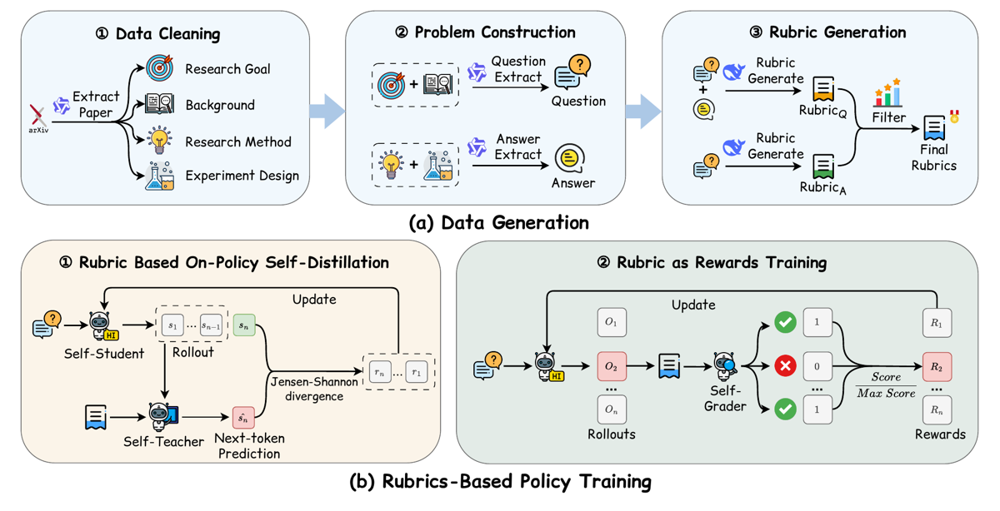
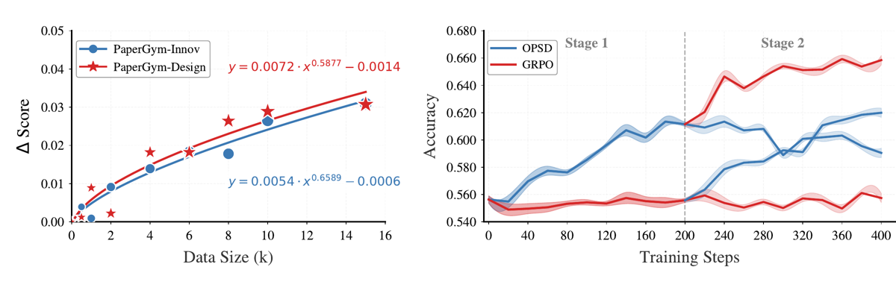
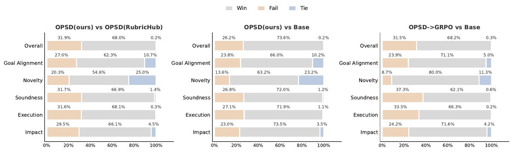

Profondeur A : grille complète, sections 0 à 9. Le papier a trois annexes substantielles (A. Dataset Analysis, B. Training Details & Ablations, C. Win Rate, D. Data Construction Details) qui contiennent tous les prompts (extraction map/reduce ×5, question, answer, rubriques R_Q/R_A, fusion, scoring/reward, détection de fuite, juge pairwise/three-way, variantes des deux benchmarks). Tout ce qui compte pour reproduire le vérifieur est recopiable ; les hyperparamètres d'optimisation, eux, sont très incomplets.
TL;DR — Chaque article arXiv est décomposé en quatre blocs (Research Goal, Background, Research Method, Experimental Design) ; la question est synthétisée à partir des deux premiers, la réponse de référence à partir des deux derniers, et les 10 critères binaires de la rubrique sont dérivés de la réponse — donc de sections disjointes de la question. La même rubrique sert deux fois : comme information privilégiée du teacher d'une self-distillation on-policy (OPSD), puis comme reward GRPO (auto-notation par une copie gelée du modèle).
Claim principal — « criterion leakage falls to 3.7%, versus 11.90% to 34.10% in existing datasets » [abstract ; Tab. leakage] : la disjonction structurelle question/critères réduit de 3 à 9× la part des critères inférables de la seule question, et le schéma OPSD→GRPO qui s'appuie dessus bat SFT, chaque stage isolé et l'ordre inverse, avec +5,56 / +5,04 / +4,81 points de moyenne sur 5 benchmarks pour Qwen3-1.7B / 4B / 8B [abstract ; Tab. 1].
Claim secondaire, celui qui compte ici — « With the recipe held fixed, models trained on PaperGym-20k win 58.1% of three-way comparisons, against 28.2% for RubricHub Science » [abstract ; Tab. 2] : à recette d'entraînement identique, la marge vient des données (la construction de la rubrique), pas de l'algorithme.
⚠️ Trois réserves qui conditionnent la lecture : 1. Le « 3,7 % » est auto-évalué : les rubriques sont écrites par DeepSeek-V4-Flash et la fuite est jugée par DeepSeek-V4-Flash, en un appel binaire, sans validation humaine, sans précision/rappel de la métrique, et sans taille d'échantillon rapportée (§5.2 ; App. criterion leakage detection). 2. L'attaque revendiquée n'est jamais exécutée. Le papier affirme que chez les autres « the reward can be earned by paraphrase » [abstract] ; il ne teste jamais une politique paraphraseuse contre son propre reward. Baisser une métrique de fuite ≠ fermer l'exploit. 3. Le reward hacking est observé et non corrigé : la rubrique pousse l'innovation et dégrade la rigueur — win-rate contre la base en scientific soundness 72,0 % → 62,1 % après le stage GRPO [App. pairwise win-rate ; Fig. 6]. Les auteurs l'attribuent explicitement à du reward hacking par allongement des réponses. Aucune mitigation.
Minées puis réécrites par modèle. Source = articles arXiv publics, source LaTeX (pas le PDF : « extracting plain-text LaTeX source for cleaner content than rendered PDFs », §3.1.1). Aucune intervention humaine, aucun annotateur, aucun expert : le pipeline est 100 % LLM.
research_field, research_background, solution, experiment. Le prompt impose une fidélité stricte — « You MUST only extract information that appears in the provided section content… If you cannot find sentence-level evidence in the section, do not extract it », champ vide si rien, double-échappement LaTeX pour que le JSON reste parsable.
- reduce : les extractions sont regroupées par bloc et refusionnées par Qwen3-235B-A22B avec un prompt dédié par bloc. Le prompt « Research background » interdit explicitement de décrire la solution : « Do not describe the specific novel solutions or experimental results proposed in this paper ». Les prompts « Solution » et « Experimental design » excluent les réglages et résultats numériques (« Exclude overly detailed numerical settings (e.g., learning rates, batch sizes, epochs) », « Exclude raw numerical results »).
- L'Experimental Design exclut les résultats numériques concrets « to prevent spurious memorization » [§3.1.1].research_field + research_background, par Qwen3-235B-A22B ; un seul paragraphe de prose, énonçant le problème non résolu, la sous-discipline, l'état des approches existantes [App. Q/A construction].research_problem + raw_solution + raw_experiment ; fidélité stricte, aucun chiffre, prose académique [App. Q/A construction].⚠️ Note de précision : §3.1.2 décrit la rubrique générale comme couvrant « completeness, specificity, soundness, efficiency, and ethical safety » (5 items) ; l'App. Reward Scoring Protocol en liste sept, dont « Handles All Criteria » et « Consistent with Overall Plan », non nommés dans le corps. Pas une contradiction, un résumé lâche.
Aucun. Pas d'ordre, pas de rééchantillonnage, pas de mélange adaptatif. Le seul « curriculum » revendiqué est au niveau des stages (OPSD puis GRPO), décrit par les auteurs comme un curriculum d'entropie « broaden-then-optimize » [App. stage-ordering swap].
Nul, revendiqué comme tel. Zéro annotation, zéro expert, zéro heure humaine : c'est l'argument central du papier (« Expert review cannot provide feedback at the scale that training requires », §1). Corollaire : aucun point d'ancrage humain nulle part dans le pipeline — ni pour les rubriques, ni pour le juge, ni pour la métrique de fuite.
⚠️ Le mot « environnement » est généreux. Malgré « turns each research paper into a complete training environment » [abstract, ×3 dans le papier], il n'y a ni outil, ni sandbox, ni multi-turn, ni état. C'est un dataset de QA ouverte + un juge.
LLM-as-judge rubrique-binaire, ancré sur une réponse de référence, auto-noté. Le noteur est une copie gelée du modèle de base (self-grading) — « eliminating the need for a separately trained external reward model » [§3.2]. Exception : à 1,7B, « whose scoring ability is insufficient », c'est le 4B qui note [§4.1 ; App. reward scoring].
r_i = α·r_spec + (1−α)·r_gen, α = 0,7 [Eq. 2 ; §3.2].Aucun. Pas de reward de format, pas de pénalité de longueur, pas de bonus. ⚠️ C'est précisément par la longueur que le hacking observé passe (§5).
Mesurée, mais jamais contre des humains : - Auto-cohérence : 4 modèles noteurs × 5 runs indépendants à température 0 [§3.1.2 ; Fig. 2 milieu]. Variance inter-runs faible pour tous ; Qwen3-8B le plus stable (variance ≈ 0,005, score moyen ≈ 0,35) et Kimi K2.6 le plus strict (score moyen ≈ 0,14, variance ≈ 0,0155). Les auteurs concluent « stronger judges scoring more strictly ». - Accord inter-modèles sur les verdicts binaires [Fig. 2 droite] : Qwen3-8B↔Kimi 0,79 (« nearly 80% agreement », §3.1.2), Qwen3-8B↔Qwen3-VL 0,88, Qwen3-8B↔DeepSeek 0,85, DeepSeek↔Kimi 0,91, Qwen3-VL↔Kimi 0,85. - ⚠️ Pas de kappa, pas de correction du hasard. Avec des taux de 1 compris entre 0,14 et 0,35, l'accord attendu par hasard sur du binaire est déjà très élevé (~0,6–0,7) : un accord brut de 0,79 est faible une fois corrigé. Les auteurs ne le font pas. - Aucun accord humain, aucun taux de faux positifs / faux négatifs, aucune précision mesurée. C'est le point aveugle central.
Prompt de scoring (App. Reward Scoring Protocol), structure intégrale :
« You are an exceptionally rigorous and professional academic peer reviewer and domain expert… You must evaluate the provided answer against the given scoring rubrics. For each rubric, you must assign a strict binary score (0 or 1)… » Entrées :
<Question>,<Rubrics>,<Answer>,<Reference_Answer>. Guidelines : « Score 1 (Completely Satisfies): The answer fully, explicitly, and comprehensively meets all requirements of the specific rubric, demonstrating quality comparable to or better than the reference answer. » ; Score 0 si l'un de : satisfaction partielle, défauts méthodologiques/expérimentaux vis-à-vis de la référence, contenu vague/générique sans les détails techniques présents dans la référence, éléments requis omis, erreurs factuelles/logiques absentes de la référence, réponse trop brève, aspects traités par la référence et pas par la réponse. « Comparison with Reference: Use the reference answer as a benchmark for quality and completeness. » « ZERO Leniency: Do NOT award a 1 simply because the answer is "on the right track" ». Sortie : tableau JSON,reasonAVANTscore, un item par critère exactement.
Les 7 critères généraux, appliqués verbatim à chaque instance (App. Reward Scoring Protocol) : 1. Handles All Criteria — satisfait tous les critères de l'item de rubrique ; exception si l'item dit « such as / for example / including », auquel cas les exemples peuvent différer s'ils restent valides. 2. Detailed, Specific Solution — détails pleinement spécifiés sur le comment ; pas d'auto-proclamation, pas de terme vague. 3. No Overlooked Flaws or Weaknesses — pas de faiblesse majeure négligée invalidant la satisfaction de l'item. 4. Well Justified Rationale — argument convaincant que la solution bat les alternatives plus simples ou les hypothèses concurrentes. 5. Cost and Effort Efficient — pas inutilement complexe ; vérifier qu'une solution moins coûteuse ne serait pas aussi efficace. 6. No Ethical Issues. 7. Consistent with Overall Plan.
Non. Aucun test adversarial, aucune politique-sonde, aucun red-teaming du vérifieur. L'attaque que le papier reproche à la littérature (gagner le reward par paraphrase de la question) n'est jamais exécutée contre PaperGym-20k : l'argument est entièrement porté par la métrique de fuite, qui est une propriété du dataset, pas une propriété du reward. Le hacking effectivement constaté (§5) a été découvert par accident, via un protocole d'éval différent.
Garantie par construction des entrées de prompt, pas par un filtre. Le prompt-question ne reçoit que {research_field, research_background} ; le prompt-réponse ne reçoit que {research_problem, raw_solution, raw_experiment} [App. Q/A construction]. Aucun contrôle automatique a posteriori ne vérifie la disjonction.
⚠️ Trois fuites possibles que le design n'exclut pas :
1. Le map extrait section par section, et l'introduction d'un article énonce sa propre contribution. Rien n'empêche research_background extrait de l'intro de porter la méthode : le seul garde-fou est une instruction en langue naturelle dans le prompt reduce (« Do not describe the specific novel solutions »). Non vérifié, non mesuré.
2. R_Q est par définition inférable de la question — c'est sa définition. Les candidats R_Q survivent pourtant à la fusion, dont le seul critère est le classement par importance contre la réponse de référence ; il n'y a aucune règle « écarter les critères inférables » dans le prompt de construction de PaperGym-20k.
3. Asymétrie révélatrice : cette règle existe, explicitement et en majuscules, uniquement dans le prompt de rubrique de PaperGym-Design (benchmark) — « Non-inferable from the task alone (CRITICAL) : each rubric must evaluate a specific design decision grounded in the [Reference Solution] that is NOT stated, implied, or predictable from the [Experimental Design Task] alone. Before finalizing each rubric, perform this self-check: "Could a reader who has only read the task description (never the reference solution) already know that a correct answer must satisfy this rubric?" If yes, DISCARD the rubric » — assortie d'une interdiction du boilerplate (« forbid… "The solution includes baseline comparisons", "The solution uses appropriate evaluation metrics" »). Or le benchmark qui porte cette instruction mesure une fuite plus élevée (4,97 %) que le corpus d'entraînement qui ne la porte pas (3,73 %) [Tab. leakage]. Soit la métrique est peu sensible, soit le 3,73 % n'est pas gouverné par ce qu'on croit. Les auteurs ne commentent pas.
[§5.2 ; App. Criterion Leakage Detection] : - Un appel LLM par instance. On donne à DeepSeek-V4-Flash la question + les 10 critères, et on demande pour chaque critère un verdict binaire : peut-il être directement inféré de la question seule ? - Taux de fuite = fraction des critères marqués « Yes ». - Prompt recopié intégralement : « You are an expert in evaluating dataset quality and detecting criterion leakage. / For each rubric item below, determine whether it can be directly inferred from the question alone. / Output only "Yes" or "No" for each rubric item, one per line, and nothing else. / Question: {question} / Rubrics: {rubrics_text} / Output: » - Appliqué à PaperGym-20k, -Innov, -Design, et à HealthBench, RubricHub Science, ResearchPlanGen-ML, ResearchPlanGen-ArXiv, ResearchQA.
⚠️ Ce que cette mesure ne vaut pas : - Circularité : DeepSeek-V4-Flash écrit les rubriques et juge si elles fuitent. Auto-évaluation d'un producteur sur sa propre production. - Juge unique, température non précisée pour cette mesure, aucun accord inter-juges (alors que le papier en fait pour le scoring et pour le win-rate — l'omission est sélective). - Aucune validation humaine, aucune précision/rappel de la métrique elle-même, aucun étalonnage sur des cas construits fuyants/non fuyants. - « Directly inferred » n'est jamais défini ; c'est le seul seuil, et il est laissé au juge. - Tailles d'échantillon non précisées : ni le nombre d'instances évaluées sur PaperGym-20k, ni sur chacun des benchmarks externes. - Confondu avec le style : les rubriques comparées sont écrites par d'autres modèles/humains, avec des conventions différentes (HealthBench est médical et humain, ResearchPlanGen est auto-généré). Un critère générique style « inclut des baselines » sera jugé inférable ; un critère hyper-spécifique ne le sera pas. On mesure donc autant la spécificité de formulation que la fuite réelle. - Un critère non inférable n'est pas un critère vérifiable. La métrique ne dit rien de la question qui nous intéresse vraiment : le critère est-il satisfait par une bonne réponse qui diffère de la référence ? Elle ne contrôle que le faux positif « trivialement gagnable », pas le faux négatif « bonne réponse alternative punie » — et le prompt de scoring (« comparable to or better than the reference answer », zero leniency) maximise justement ce faux négatif-là.
Stage 1 — Rubric-Conditioned OPSD (On-Policy Self-Distillation, d'après \citet{zhao2026self}) [§3.2 ; Eq. 1] : l'étudiant génère des rollouts on-policy ; le teacher, c'est le même modèle conditionné en plus sur la rubrique comme information privilégiée (retirée à l'inférence) ; on minimise la divergence Jensen-Shannon JSD_β token-level entre teacher (stop-gradient) et student sur les préfixes du rollout. Argument des auteurs : la rubrique énumère les principes de qualité et non une solution réalisée, donc le teacher « preserves a broader set of valid continuations than answer-conditioned distillation ». Stage 2 — GRPO rubric-as-rewards [§3.2 ; Eq. 3] : GRPO standard (ratio séquence-level ρ_i, clipping, avantage group-normalisé par moyenne/écart-type du groupe, pénalité KL à π_ref). Rien de non standard dans l'algorithme lui-même ; la contribution est le reward et l'ordonnancement.
| Paramètre | Valeur |
|---|---|
| OPSD : LoRA | r = 64, α = 128 |
| OPSD : LR | 5×10⁻⁶ |
| OPSD : batch effectif | 8 |
| OPSD : steps | 200 (1.7B, 4B) ; 400 (8B) |
| GRPO : framework | verl ; rollouts vLLM |
| GRPO : taille de groupe | 8 réponses / prompt |
| GRPO : KL | 0,01 (référence = π_ref, le modèle de départ du stage) |
| GRPO : LR | 1×10⁻⁵ |
| GRPO : steps | 200 (1.7B, 4B) ; 100 (8B) |
| Reward mix α | 0,7 (spec : gen = 7:3) |
| Précision | bf16, thinking mode activé |
| Scoring | température 0 |
| GRPO batch (scaling run seulement) | 50 |
Non précisé : ε de clipping, température / top-p des rollouts, longueur max de génération, taille de batch GRPO du run principal, nombre d'epochs sur les données, β de la JSD, schedule de LR, warmup, si le GRPO est en LoRA ou full-finetune, nombre de prompts vus au total, normalisation de longueur de l'avantage, traitement des groupes à reward constant.
⚠️ Deux manques qui mordent : (i) le ratio est séquence-level (Eq. 3) alors que tout l'argumentaire porte sur la densité token-level — la densité est confinée au stage 1 ; (ii) aucun traitement des groupes dégénérés n'est mentionné, alors que le reward est strictement binaire, zero-leniency, et ancré sur une référence : avec des scores moyens de 0,14–0,35 [Fig. 2] et G = 8, une fraction importante des groupes doit être tout-à-zéro donc d'avantage nul. Jamais mesuré.
4× NVIDIA A6000 48 GB pour 1.7B et 4B ; 4× « NVIDIA Pro A6000 » 96 GB pour 8B [§4.1]. GPU-heures, durée, coût : non précisé. C'est un setup académique modeste — à noter, ça rend le tout reproductible mais ça explique aussi le choix du self-grading (pas d'API dans la boucle).
reason + score. Les auteurs revendiquent que « confining rubric evaluation to the GRPO stage reduces verifier calls » [§2.3], sans jamais donner le compte.| Chiffre annoncé | Où il est annoncé | Source dans le papier | Verdict |
|---|---|---|---|
| « criterion leakage falls to 3.7% » | abstract, §1, conclusion | Tab. leakage : 3,73 % | confirmé |
| « versus 11.90% to 34.10% in existing datasets » | abstract, §1 | Tab. leakage : HealthBench 11,90 ; RubricHub Science 17,39 ; ResearchQA 19,22 ; ResearchPlanGen-ML 31,29 ; ResearchPlanGen-ArXiv 34,10 | confirmé |
| « three to nine times lower » | §1 | calcul sur Tab. leakage : 11,90/3,73 = 3,19× ; 34,10/3,73 = 9,14× | confirmé |
| « improving five-benchmark averages by +5.6, +5.0, and +4.8 points » | abstract, §1 | Tab. 1 : +5,56 / +5,04 / +4,81 (moyennes recalculées à la main : cohérentes au centième) | confirmé ⚠️ mais budget de steps non apparié (voir Solidité) |
| « win 58.1% of three-way comparisons, against 28.2% for RubricHub Science » | abstract, §1, §4.2 | Tab. 2, cellule Overall (image figs/compare_overall.png) : 58,1 / 28,2 / 13,7 |
confirmé — ⚠️ portée : Qwen3-1.7B seulement, stage OPSD seul 200 steps (pas le schéma complet), 685 instances de ResearchPlanGen-ML, 3 juges + départageur [App. three-way] |
| idem, par critère | Tab. 2 | figures : goal alignment 55,6/28,9/15,5 ; novel insight 58,4/29,2/12,4 ; soundness 57,2/28,9/13,9 ; execution 54,6/31,1/14,3 ; impact 57,1/29,3/13,6 | confirmé (marge homogène 54–58 %) |
| « The trained Qwen3-8B reaches 73.48 on ResearchQA, above the far larger Kimi K2.6 » | abstract, §1, §4.2, conclusion (×4) | Tab. 1 : 73,48 vs 73,19 | sur-généralisé : vrai sur 1 benchmark sur 5 et de +0,29 point ; sur la moyenne des 5, Kimi K2.6 fait 51,64 vs 38,55, soit −13,09 pour le modèle entraîné. Kimi gagne aussi sur RubricHub (63,31 vs 49,41), ResearchPlanGen-ML (54,49 vs 23,53), Innov (31,12 vs 24,47), Design (36,07 vs 21,88). |
| « the far larger Kimi K2.6 » | abstract, §1, conclusion | aucune taille de paramètres de Kimi K2.6 n'est donnée nulle part dans le papier | introuvable (plausible, non sourcé) |
| « outperforms… the reverse ordering » | abstract, §1 | Tab. stage_order : +2,04 / +0,99 / +1,31 de moyenne, et gain sur 5/5 benchmarks × 3/3 échelles | confirmé |
| « the 20,000-instance corpus » | abstract, §1, conclusion | §3.1.2 + Fig. 2 gauche (Total 20 000) | confirmé pour le corpus — ⚠️ l'entraînement principal n'en utilise que le sous-ensemble CS (~10 000) [§4.1] |
| « 63.8% of criteria target Method and 36.2% target Experiment » | §3.1.2 | App. : 6 375/9 999 = 63,76 % ; 3 624 = 36,24 % (1 000 instances) | confirmé (⚠️ 9 999 et non 10 000 : une instance à 9 critères) |
| « The small Qwen3-8B reaches nearly 80% agreement with Kimi K2.6 » | §3.1.2 | Fig. 2 droite : 0,79 | confirmé (brut, non corrigé du hasard) |
| « α = 0.7 … validated by the sensitivity analysis » | §3.2 | Tab. sensitivity : 7:3 → 17,17 / 12,35 ; 8:2 → 14,63 / 10,86 ; 6:4 → 16,40 / 11,54 | confirmé mais 3 points seulement, Qwen3-1.7B, 100 steps GRPO |
| « OPSD… matches single-stage GRPO (35.84 vs 35.86 at 8B) » | §4.2 | Tab. 1 | confirmé |
| « SFT… dropping by −0.96 on average at the 8B scale » | §4.2 | Tab. 1 : 32,79 vs 33,74 | confirmé |
| « applying GRPO first on random init » | §5.3 | — | ⚠️ erreur de rédaction : l'ordre inverse part du modèle Qwen3 pré-entraîné, pas d'une initialisation aléatoire. Sans conséquence sur les chiffres. |
Verdict 7.0 : aucun chiffre contredit, aucun chiffre introuvable hors le « far larger » non sourcé ; une sur-généralisation nette et répétée quatre fois (le dépassement de Kimi K2.6), qui est précisément le chiffre le plus mémorable de l'abstract. Arithmétique des moyennes vérifiée à la main sur 4 lignes : correcte.
| Modèle / stratégie | RubricHub Sci. | ResearchPlanGen-ML | ResearchQA | Innov | Design | Avg |
|---|---|---|---|---|---|---|
| GPT-5.1 | 63,75 | 61,66 | 76,52 | 36,59 | 34,11 | 54,53 |
| Claude-Sonnet-5 | 60,10 | 60,03 | 66,04* | 36,17 | 39,63 | 52,39 |
| Kimi K2.6 | 63,31 | 54,49 | 73,19 | 31,12 | 36,07 | 51,64 |
| S1-VL-RL (32B, spécialisé) | 57,77 | 29,23 | 72,09 | 22,31 | 23,68 | 41,02 |
| Qwen3-8B base | 46,07 | 20,28 | 66,65 | 18,69 | 17,03 | 33,74 |
| Qwen3-8B + SFT | 45,29 | 17,91 | 67,53 | 17,52 | 15,68 | 32,79 |
| Qwen3-8B + OPSD | 47,41 | 23,17 | 69,17 | 21,42 | 18,04 | 35,84 |
| Qwen3-8B + GRPO | 48,09 | 20,76 | 71,02 | 20,26 | 19,17 | 35,86 |
| Qwen3-8B + OPSD→GRPO | 49,41 | 23,53 | 73,48 | 24,47 | 21,88 | 38,55 |
* artefact de refus, cf. §5 cas 4.
Lecture : le modèle entraîné à 8B reste 16 points sous GPT-5.1 en moyenne et 13 sous Kimi K2.6. Le gain est réel (+4,81) mais le framing « surpasse Kimi K2.6 » n'est pas la bonne synthèse de ce tableau.
| Ablation | Résultat (Innov / Design) | Ce que ça isole |
|---|---|---|
| Full pipeline (Qwen3-1.7B, OPSD 200 steps) | 14,16 / 10,45 | référence |
| R_Q seul | 13,19 / 10,24 (−0,97 / −0,21) | il faut la source ancrée réponse |
| R_A seul | 12,29 / 9,34 (−1,87 / −1,11) | il faut aussi la source question — contre-intuitif et intéressant |
| Dimension innovation seule | 14,13 / 9,93 (−0,03 / −0,52) | la 2ᵉ dimension n'aide que sur Design |
| Extraction par Qwen3-8B | 13,19 / 9,78 (−0,97 / −0,67) | l'extraction est robuste |
| Génération de rubrique par Qwen3-8B | 12,16 / 9,27 (−2,00 / −1,18) | la qualité de la rubrique est le vrai goulot |
| Teacher conditionné sur la réponse (au lieu de la rubrique) | 13,08 / 9,57 (−1,08 / −0,88) | la rubrique > la réponse comme info privilégiée |
| Teacher conditionné sur rubrique + réponse | 13,81 / 9,17 | ajouter la réponse dégrade (−1,28 sur Design) |
| Ordre inverse GRPO→OPSD | −2,04 / −0,99 / −1,31 de moyenne aux 3 échelles | l'ordre compte, et de façon consistante |
Ingrédient dominant : la capacité du modèle qui écrit la rubrique (−2,00 en passant de DeepSeek-V4-Flash à Qwen3-8B, la plus grosse chute de toutes les ablations) — plus que le pipeline d'extraction, plus que la dimension. Deuxième : l'ordre des stages. Troisième : la fusion des deux sources de rubrique. ⚠️ Toutes les ablations de données sont faites à 1,7B, OPSD-only, 200 steps, et jugées sur les deux benchmarks in-domain seulement. Les écarts (−0,03 à −2,00 points sur des scores de 9–14) sont du même ordre que la variance d'un juge LLM sur un run, et aucune barre d'erreur n'est donnée. La hiérarchie des ingrédients est donc plausible, pas établie.
data_generation/, opsd/, grpo/, test/), données, poids, page projet — les quatre URL répondent (vérifié 2026-10-19) — et tous les prompts sont recopiés verbatim en annexe. On peut refaire le pipeline.Verdict : plausible mais fragile. Le mécanisme central (disjonction structurelle question↔critères) est une bonne idée, exécutée proprement et entièrement publiée ; mais sa validation est circulaire (le générateur des rubriques est le juge de leur fuite et le juge de l'éval), sans aucun ancrage humain, sans seed, et le gain principal n'est pas à compute constant. Le papier vaut pour son pipeline et ses prompts, pas pour ses chiffres. À répliquer avec un juge indépendant et un ancrage humain, ce qui est faisable puisque tout est publié.

Ce qu'il faut voir : la totalité du design tient dans le panneau (a)②. L'article est découpé en 4 blocs ; Research Goal + Background → Question, Research Method + Experiment Design → Answer. La disjonction est une affectation d'entrées de prompt, rien de plus — aucun module de vérification de la disjonction n'apparaît dans le schéma. En (a)③,Rubric_Q part de la question + réponse, Rubric_A de la question seule, et « Filter » est en réalité un dédoublonnage + classement par importance. En (b)②, noter le Self-Grader (copie gelée du modèle) et l'agrégation Score / Max Score : la rubrique redevient un scalaire avant d'entrer dans GRPO.

Ce qu'il faut voir : à droite, la seule comparaison à budget de steps égal du papier. Après le step 200, quatre trajectoires : OPSD→GRPO monte à ≈0,653 ; GRPO→OPSD à ≈0,618 ; OPSD seul décline (≈0,613 → ≈0,593 — l'overfit de l'information privilégiée, visible à l'œil) ; GRPO seul reste plat à ≈0,553 (cold start sur reward sparse). À gauche, les exposants ajustés (0,59 et 0,66) sont sous-linéaires : le corpus rend des points de moins en moins vite, et l'axe s'arrête à 15k.
Ce qu'il faut voir : le failure mode, qui n'apparaît que là. Panneau du milieu (OPSD seul vs base) et de droite (OPSD→GRPO vs base) : ajouter le stage GRPO fait gagner en Novelty (63,2 → 80,0 %) et Goal Alignment (66,0 → 71,1 %), mais perdre en Soundness (72,0 → 62,1 %), Execution (71,9 → 66,3 %) et, surtout, en Overall (73,6 → 68,2 %). Le reward rubrique monte sur les 5 benchmarks du Tab. 1 et la qualité globale jugée par trois autres modèles baisse : c'est la définition opérationnelle du reward hacking, ici attribué par les auteurs eux-mêmes à l'allongement des réponses — et non corrigé.| Ingrédient | Choix du papier | Équivalent juridique | Transfert | Ce qui manque |
|---|---|---|---|---|
| Source des tâches | Articles arXiv, source LaTeX, découpés en 4 blocs par map-reduce LLM [§3.1.1] | Décisions de justice : un arrêt est nativement quadripartite — Faits / Procédure | Moyens | Motifs | Dispositif. Aussi : mémos de cabinet (faits+question | analyse+recommandation), contrats (term sheet | clauses exécutées), avis de l'avocat général | arrêt | direct — meilleure adéquation structurelle que pour les articles : la segmentation est juridiquement normée, pas inférée par un LLM. EUR-Lex, Judilibre, Légifrance, CURIA sont publics et structurés | Le work product de cabinet (le plus proche de Harvey LAB) n'est pas public → pour la partie « rédaction de mémo », il faut une source interne ou sous licence |
| Disjonction question / critères | Entrées de prompt disjointes, sans vérification [App. Q/A] | Question ← Faits + Procédure + Question posée ; réponse de référence ← Motifs + Dispositif ; rubrique ← Motifs | adaptable, avec un risque aggravé | ⚠️ Le juge rédige les faits après avoir décidé : la section « Faits » d'un arrêt est narrativement orientée vers le dispositif. La fuite est donc structurellement plus forte qu'en science, où le background précède la solution. Il faut un dé-biaisage des faits (réécriture neutre, suppression des qualifications juridiques) que PaperGym n'a pas à faire |
| Vérifieur | 10 critères binaires atomiques générés par DeepSeek-V4-Flash depuis la réponse de référence + 7 critères généraux fixes ; juge = copie gelée du modèle, ancrée sur la référence, zero leniency [§3.2 ; App. reward] | Rubrique extraite des Motifs : « identifie le fondement textuel X », « distingue l'arrêt Y », « traite l'exception de prescription », « conclut dans le sens Z ». Rubrique générale fixe = qualité de mémo (citations vérifiables, qualification, articulation moyen/réponse, risques, juridiction) | direct sur le principe, adaptable sur la mise en œuvre — c'est le cœur de l'intérêt du papier : la rubrique vient du document de référence, pas d'un annotateur | ⚠️ Rien sur les citations : un critère juridique « cite l'art. 1240 C. civ. » exige une vérification externe (le texte existe-t-il, est-il en vigueur à la date, dit-il cela) que le pipeline LLM-seul ne fait pas. Rien non plus sur les juridictions multiples ni sur l'évolution des sources (un arrêt de 2015 peut être renversé) |
| Harness / outils | Aucun. Single-turn, pas de retrieval, pas de sandbox | Harvey LAB / Vals supposent recherche documentaire, citation, multi-tour | non | Tout. PaperGym n'offre aucun patron de harness. À prendre ailleurs |
| Algo | OPSD (JSD token-level, teacher conditionné rubrique) → GRPO (G = 8, KL = 0,01, LR 1e-5, α = 0,7) [§3.2 ; §4.1] | Même schéma, directement | direct | Hyperparamètres incomplets (clipping, température, longueur max) ; rien sur la gestion des groupes dégénérés, qui sera pire en droit (réponses longues, rubriques exigeantes, référence experte → reward quasi nul au départ) |
| Curriculum | Aucun au niveau des tâches ; curriculum d'entropie au niveau des stages (élargir puis resserrer) | Ordonner par matière, par juridiction, par longueur de motivation | adaptable | Le papier n'offre aucune preuve sur le curriculum de tâches — à concevoir |
| Anti-hacking | Aucun mécanisme. Hacking par longueur constaté et non corrigé [App. pairwise] | Le droit est pire : la verbosité est la pathologie native du texte juridique, et une rubrique à 10 cases s'y prête idéalement | non — contre-exemple à ne pas reproduire | Il faut ce que le papier n'a pas : pénalité/normalisation de longueur, éval sur des axes hors reward (la seule chose qui a détecté le hacking ici), et une validation humaine du juge |
| Métrique de fuite | Un appel LLM binaire « inférable de la question seule ? », juge = auteur des rubriques [App. leakage] | Transposable tel quel : « ce critère est-il déductible des seuls faits ? » | adaptable | ⚠️ Ne jamais réutiliser le même modèle comme générateur et juge de fuite ; et ajouter la mesure que le papier omet — la sonde paraphrase (une politique qui ne fait que reformuler la question obtient quel reward ?) |
La rubrique dérivée d'une section du document de référence que la question ne contient pas. C'est exactement le problème du reward juridique sans vérité exacte : on n'a pas d'annotateur à l'échelle, mais on a des millions de documents où le raisonnement expert est déjà écrit — et un arrêt, contrairement à un article scientifique, est déjà segmenté par le droit lui-même en « ce qui est donné » (Faits, Procédure, Moyens) et « ce qui est à produire » (Motifs, Dispositif). PaperGym doit faire inférer cette frontière par un LLM de 235B ; en droit, elle est dans la structure formelle du document. Le transfert est donc plus facile que l'original sur ce point précis, et c'est rare.
Deuxième ingrédient, moins visible mais aussi important : le warm-up avant le RL quand le reward est sparse. Un reward binaire, zero-leniency, ancré sur une référence experte, donnera au départ un reward proche de zéro sur toute réponse de modèle — donc des groupes GRPO dégénérés. PaperGym documente précisément ce cold-start (« group-normalized advantages are dominated by sampling noise », App.) et son remède : OPSD conditionné sur la rubrique, pas du SFT sur la réponse (le SFT est nuisible à 8B, −0,96 [Tab. 1] ; et le teacher conditionné réponse est pire que le teacher conditionné rubrique, −1,08 / −0,88 [App. OPSD privileged]). Pour un mémo juridique, où il existe une bonne réponse de référence et mille bonnes réponses alternatives, « distiller les critères plutôt que la réponse » est le bon réflexe.
Setup. 2 000 arrêts publics francophones ou CJUE (Judilibre / EUR-Lex), segmentés par les balises formelles existantes. Question ← Faits + Procédure + Question posée, réécrite en neutralisant les qualifications juridiques. Réponse de référence ← Motifs (sans le Dispositif). Rubrique ← 10 critères binaires atomiques générés depuis les Motifs par un modèle fort, fusion de la source « question seule » et de la source « question + motifs », dédoublonnage + classement par importance — c'est-à-dire le pipeline PaperGym à l'identique, prompts repris de l'annexe D.
Trois mesures, dans cet ordre, avant tout entraînement : 1. Fuite, protocole App. leakage, mais avec un juge différent du générateur et un étalon de 200 critères annotés par un juriste : la métrique LLM est-elle d'accord avec l'humain ? Prédiction : la fuite brute sera plus haute qu'en science (je parierais 10–20 %, pas 3,7 %), à cause de la rédaction rétrospective des faits. 2. Sonde paraphrase — la mesure que PaperGym n'a jamais faite : une politique qui se contente de reformuler la question obtient quel reward ? Si elle dépasse ~0,2, la disjonction n'a pas fermé l'exploit et il faut un filtre explicite (la règle « Non-inferable from the task alone (CRITICAL) » de l'annexe D, appliquée cette fois au corpus d'entraînement et pas seulement au benchmark). 3. Accord juge / juriste sur 200 couples (réponse, critère), avec kappa. Sans ce chiffre, aucun des suivants n'a de sens.
Puis l'entraînement : OPSD(rubrique) 200 steps → GRPO 200 steps sur un 8B, α = 0,7, G = 8, KL = 0,01 — avec deux ajouts non présents dans le papier : une normalisation de longueur dans le reward, et une éval sur des axes hors reward (win-rate pairwise multi-juges sur rigueur / exactitude des citations / concision) à chaque checkpoint, puisque c'est le seul protocole qui a détecté le hacking chez eux.
Résultat attendu. +3 à +6 points sur une éval rubrique in-domain (l'ordre de grandeur du papier à 8B : +4,81), un transfert OOD positif mais plus faible sur Vals Legal Research Bench, et — c'est la prédiction qui m'intéresse — une régression sur l'axe rigueur/exactitude des citations pendant que la rubrique monte, par le même mécanisme que Fig. 6. Si cette régression n'apparaît pas, c'est que la rubrique juridique contient déjà des critères de rigueur contraignants, et il faudra le vérifier plutôt que s'en féliciter.
Deux : 1. Qui écrit les rubriques, et qui juge ? PaperGym fait écrire, fusionner, noter et auto-auditer par la même famille de modèles, sans jamais un humain — et ça passe en preprint. Pour Gemini Law, où le juge sera Gemini : quel est notre protocole minimal de séparation générateur / juge / auditeur, et quel est le budget d'heures d'avocat que nous acceptons de dépenser pour ancrer le juge (accord + kappa sur un échantillon fixe, re-mesuré à chaque itération de rubrique) ? Sans ce budget, nous produirons la même circularité à plus grande échelle. 2. Avons-nous le droit, et la volonté, de construire la rubrique depuis le work product des cabinets clients ? Le pattern ne vaut que si la « section disjointe » existe. Les arrêts publics la donnent gratuitement ; les mémos de cabinet — qui sont précisément ce que Harvey LAB évalue — ne sont accessibles que sous licence ou sous accord. C'est une question de data deal à poser avant la conception de l'env, pas après.